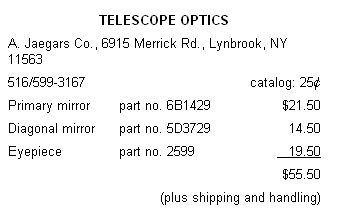

"Space - the final frontier . . . ."
Those words, spoken by Scar Trek's Captain Kirk many years ago, still hold true today. There are billions of stars, planets, moons, and comets (of which Halley's is only one) out there for us to explore. Of course, during this generation at least, few of us will be lucky enough to actually venture into space. But, on starry nights, we can look up and wonder.
A naked eye peering into the sky can divine a few of the universe's secrets . . . but with a telescope, your vision can reach deep into space for answers. For a novice stargazer, though, buying a telescope is a big step. To get a top-notch new scope, you'd have to invest hundreds of dollars . . . and what's to say that you (or your aspiring child astronomer) won't lose interest after a few nights?
The solution - one that will require more personal and less monetary investment - is to build your own telescope. With tools no more sophisticated than a power saw, a router, and a drill - and some care in construction - you can produce a quality 3-3/8" Newtonian reflector telescope that is comparable to commercial scopes costing three or four times as much!
Though it's possible to make the optical parts of a reflecting telescope, the process is laborious and exacting, and the savings aren't all that great. For example, I ordered a curved 3-3/8" main, or primary, mirror with a focal length of 42", and a matching diagonal mirror to reflect light rays into a 31/32"-diameter eyepiece with a 15 mm focal length. The three pieces were purchased from the A. Jaegars Company for $55.50 (plus shipping and handling).
Once you've gotten the two mirrors and the eyepiece, you can begin constructing the telescope tube. Cut the four sides out of a quarter sheet of 3/8" A-C exterior plywood, guided by the dimensions in Fig. 2. Then paint the C-grade sides flat black (a brush application works better than aerosol), and tack the tube together, painted side in, with wood glue and 4d finish nails spaced every 6". What you'll get is, well, an ugly rectangular box. Just remember, the beauty of a telescope comes not from what it looks like but what it looks at. . . and how well it does so!
Set the tube aside, and begin work on the holder for the main mirror (this component is called a cell by astronomers). Though it would be convenient to just glue the mirror to the bottom end panel of the tube, that approach won't do. The light from the stars and planets travels many millions of miles to get to your telescope, and if the mirrors aren't lined up perfectly, the scope's performance will be substandard at best. You must provide a way to adjust the mirrors after they've been mounted.
Fig. 2 shows you the dimensions for building a primary cell to fit the A. Jaegars No. 6B1429 primary mirror. To fit other mirrors, adjust the routed-cavity dimensions so the mirror will be flush with the cell's rim and have about 1/16 inch of play within the rim's diameter. The goal is for the mirror to be able to slip smoothly into the cell without rattling around. When you finish with the router, dill and countersink a 1/8" hole in the center of the cell, and cut the plywood to the diameter shown in the drawing.
Next, cut the square 3/8" plywood bottom for the tube to the dimensions shown in Fig. 2, drill a 1/8" hole in the center of the board, and bore three 3/16" holes around the central one at 120° intervals on a radius of about 1-1/8". These 3/16" holes will form an equilateral triangle with sides of about 2". From the A-grade side of the plywood, twist a 3/16" X 1-1/2" thumbscrew into each of these holes until the screw sticks out 1/2".
To connect the cell to the bottom panel, insert a 1/8" X 2" flathead machine screw through the countersunk side of the central hole in the cell, and spin a nut down on the back of the cell to hold the screw in place. Slip this fastener through the central hole in the tube bottom, and snug the back of the cell up against the three 3/16" thumbscrews by tightening a wing nut onto the 1/8" screw. Don't overtighten the wing nut . . . spin it on just far enough to hold the cell against the points of the thumbscrews.
When the time comes to restrain the mirror in the cell, don't glue it, as this would prevent it from expanding and contracting with changes in temperature. Instead, use three No. 4 X 1/2" wood screws and 1/8"-thick plastic tabs, spaced at 120° intervals around the perimeter of the cavity.
The rays of light coming from the main mirror are reflected into the eyepiece (at a right angle) by the diagonal mirror. The eyepiece, in turn, converges the rays further, effecting additional magnification and producing an image for you to view. Therefore, these components must be accurately positioned if your telescope is to produce clear images.
Measure 40" from the bottom of the tube (not including the 3/8" bottom board), and mark the location of the center of the eyepiece by making a line all the way across the top panel of the tube. Move one inch farther up the tube, and mark the position of the diagonal mount. Why 40" when the focal length of the main mirror is 42"? The reflective surface of the main mirror is 1-1/4" above the bottom of the tube (1 /2" of screw and 3/4" of plywood), so the actual distance from the main mirror to the center of the diagonal (directly below the eyepiece) is 38-3/4". It's 2-1/2" from the center of the diagonal mirror to the outside of the tube wall, which leaves 3/4" for the eyepiece mount. Thus, once the 3/4"-thick board is added for the eyepiece mount, the focus of the main mirror will be exactly at the outer edge of the eyepiece hole.
You can use either 3/4" plywood or one-by lumber (25/32") to make the 1-1/2" X 4" mounting plate. Glue and screw this board to the top of the tube - in the position shown in Fig. 2 - but wait to drill the eyepiece- and diagonal-mount holes until after the board is in place, so that you'll be sure to get a good match.
The A. Jaegars eyepiece is 31/32" in diameter, so use either a 15/16" or 7/8" hole saw to make the mounting hole, and then file the opening until the eyepiece moves smoothly in and out but has no sideways play. (Remember to center the hole exactly on the 40" mark.) Now, move to the line at 41" and bore the 1/8" hole for the diagonal mount.
To make the holder for the diagonal mirror, cut a piece of 3/4" dowel to an angle of exactly 45° on one end (a miter box is a big help here), and then trim the dowel to a total length of 1-1/4". Next, drill a 1/8" hole on a 1" center from the mitered end. It's important that this hole be square to the dowel's surface and aligned with the plane of reflectance for the 45° miter (a try square or adjustable bevel can help you establish this alignment). When you're satisfied that the drilling and cutting have been done accurately, glue the diagonal mirror to the center of the 45° surface with Pliobond cement.
Because dust will accumulate on the mirrors over time, you'll want to have access to the assemblies inside the tube. I arranged this by mounting the main mirror cell (with the bottom board) to the tube with two loose-pin hinges, so that the assembly is secure during use but can be removed easily. Before installing the mirror in the cell, attach the hinges to the bottom board, and position the assembly against the bottom of the tube. Mark the locations of the holes for the hinges on the tube sides, leaving a tiny bit of offset to ensure a snug fit. Then remove the hinges' pins, mount the other halves to the sides of the tube, restrain the mirror in the cell, slip the assembly into the bottom of the tube, and push the pins into the hinges.
The diagonal is held in position by a 1/8" X 3" threaded rod screwed through the hole in the eyepiece-and-diagonalmount board so it extends an inch into the tube. Reach into the tube and screw the diagonal onto the fastener until it's firmly held, then rotate the rod from the outside until the diagonal is in the center of the tube and properly aligned. Then secure the rod with the four 1/8" nuts.
Look down through the eyepiece hole and compare what you see with the three drawings in Fig. 3. The image will probably resemble A, which means that both mirrors are out of whack, and you should start by adjusting the diagonal. Rotate the diagonal left or right to center the large circle; if the misalignment is vertical, you'll have to bend the 1/8" stove bolt backward or forward slightly with a pair of needle-nose pliers. Once the image looks like B, fiddle - little by little - with the thumbscrews on the main mirror until the small circle moves to the center of the big one, as shown in C.
Now set the eyepiece into its mounting hole and prepare to explore the heavens (the sidebar on the facing page lists some special events you'll want to view). This basic telescope will allow you to see many memorable sights: the craters of the moon, Saturn's ring; the Galilean moons of Jupiter, and beyond. For the time being, you can prop the scope scope against a chair or fence to steady it, but eventually you'll probably want to mount it to a sturdy tripod. In time, perhaps you'll want to add a rack-and-pinion eyepiece mount with a selection of other eyepieces or maybe even add an equatorial mount for following the plane of the ecliptic across the sky. Someday you may find that your desire to know exceeds this scope's ability to provide answers. When - and if - that night rolls around, it may be time to build an even larger telescope based on the same simple box design.
Here's a list of events for the rest of the year that you won't want to miss. With a couple of exceptions, all of these occurrences are visible without a telescope, but your home-built observatory will enhance the viewing.
May 4: Look for Eta Aquarid meteors. This display is better in the Southern Hemisphere, and, unfortunately, it's accompanied by a full moon. But these meteors are derived from Halley's comet and might be more prominent than usual this year.
May 15: Saturn is on the opposite side of the earth from the sun and is best situated for viewing. It rises about dusk in the ESE (east-southeast) and sets around dawn in the WSW.
June 6: Uranus is on the opposite side of the earth from the sun and is best situated for viewing. It rises around dusk in the SE and sets about dawn in the SW. The planet probably will not be visible without binoculars or a telescope.
June 23: Neptune is on the opposite side of the earth from the sun and is best situated for viewing. It rises around dusk in the SE and sets about dawn in the SW. It's probably visible only with a telescope.
July 8: Capricornid meteors reach their first peak. The best viewing will be around midnight in the Northern Hemisphere.
July 29: Delta Aquarid meteors peak. This is the greatest - though not the most spectacular - shower of the year, and it's best viewed around 2:00 AM in the Northern Hemisphere.
August 4: Jupiter is on the opposite side of the earth from the sun and is best situated for viewing. It rises in the east about dusk and sets in the WSW about dawn. Its magnitude (apparent brightness) is greatest on August 5.
August 12: The Perseids are generally the most spectacular meteor shower of the year. They're best viewed in the Northern Hemisphere and originate from the highest point in the sky just before dawn. However, they can be seen lower in the sky anytime after dusk.
October 9: The Draconid (or Giacobinid) meteors are near their peak this year, and they may be even more spectacular than the Perseids. They're best viewed in early evening in North America.
October 20: The Orionid meteors are derived from Halley's comet, but may be stronger than the Eta Aquarids because the comet is twice as close. They are best viewed in North America about dusk.
vNovember 3-23: The first "window" of visibility for Halley's comet, which probably will be visible only with binoculars or a telescope. For example, look just below the Pleiades on the 16th.
vNovember 17: Leonid meteors reach their peak. This shower will be visible only in western North America but is of interest because the meteors have the highest apparent velocity of any.
December 1-17: The second "window" of visibility for Halley's comet. The greatest apparent magnitude will be about 5.4, sufficiently bright to be seen with the naked eye in average conditions. For example, look just south of Aquarius on the 17th.
December 17: Mercury's best autumn appearance is in the early morning about 10° east of SE and 12° above the horizon.
|
This scope's power (about 70) can reveal relief on the moon's surface. |
[1] The main mirror sits in a routed piece of 3/4"" plywood. |
[2] The diagonal mirror is glued to a section of 3/4"" dowel and hung from a 1/8"" threaded rod. |
|
[3] Drilling a 15/16"" eyepiece hole saves buying an expensive mount. |
Accurate in 1985. Company seems to be no longer in business in 2010. |
 |
|
|
|
|